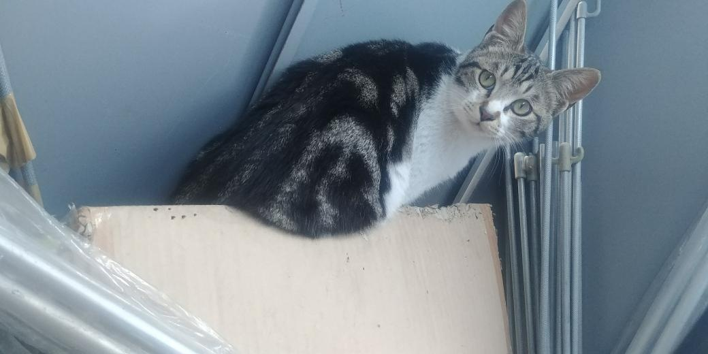
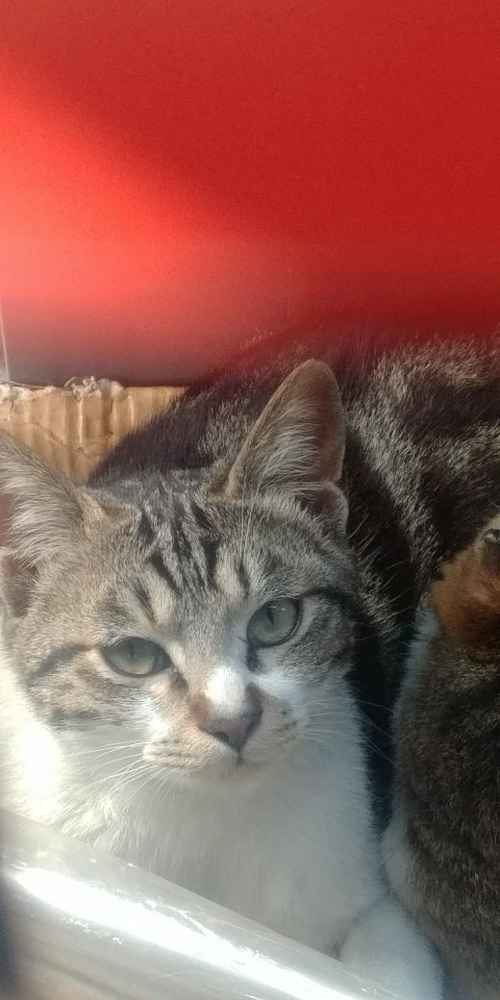
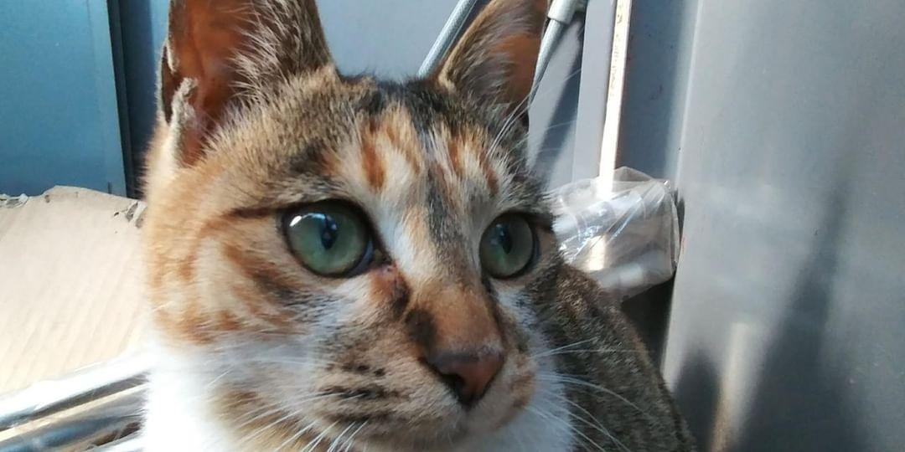

고양이
-
고양이(cat)는 식육목 고양이과 고양이속의 한 종(Felis catus)이다.
-
고양이의 신체적 특성과 습성은 다른 고양이과 동물들과 유사하게 빠른 반사신경, 탁월한 유연성, 날카로운 이빨, 넣고 꺼낼 수 있는 발톱 등이 있다.
-
매우 긴 수면 시간을 가지고 있어 하루 종일 자는 시간이 굉장히 많으나 기본적으로 야생에서는 포식자 동물이라는 특성상 해 뜰 녘과 해 질 녘에 주로 행동한다.
-
또한 여타 고양잇과 동물들과 같이 고양이는 육식동물로, 야생에 사는 들고양이는 쥐, 다람쥐, 작은 새 등을 사냥해 잡아먹는다.
- 한국에서는 사는 곳에 따라 들고양이, 길고양이, 집고양이 등으로 구분된다.
- 고양이는 19세기 후반 이후 인간에 의해 품종이 개량 되어 다양한 묘종이 있으며, 품종 등록을 관장하는 국제고양이협회(TICA)는 71개 묘종을 인정한다.


